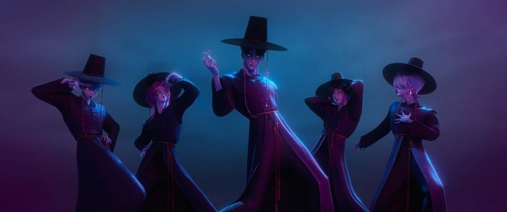
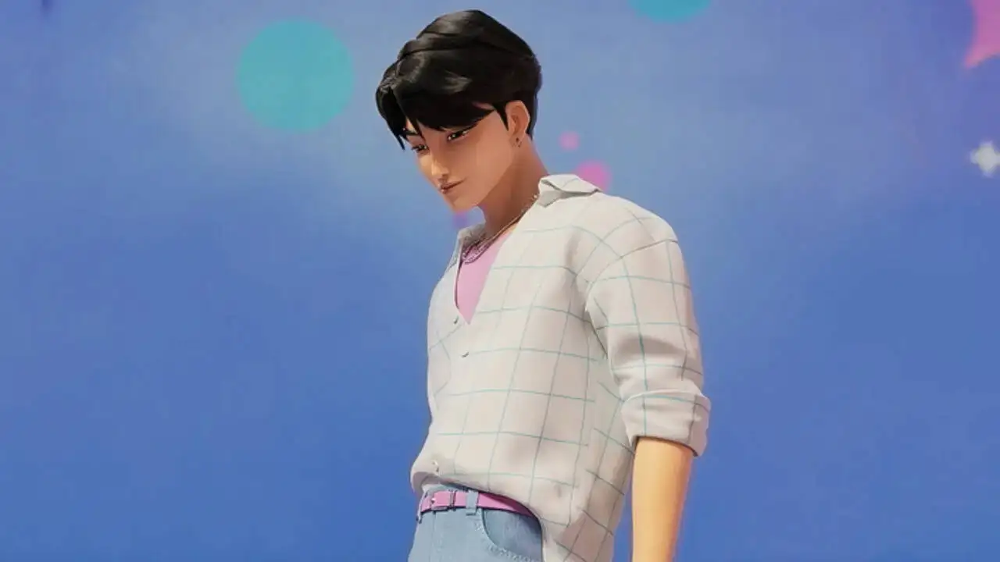
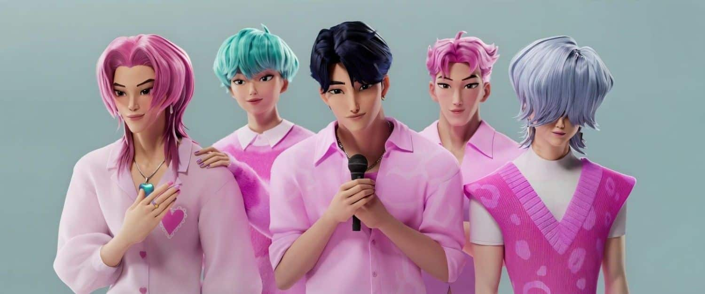
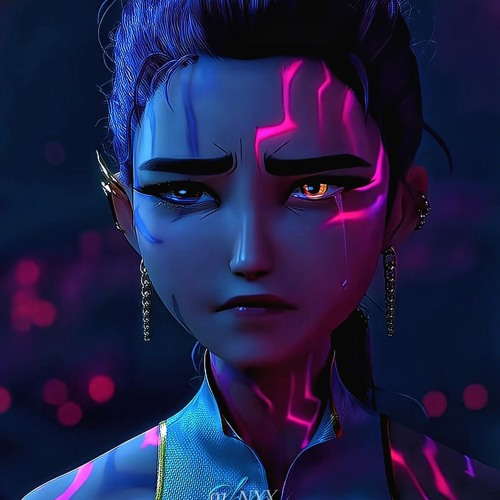

Most People Completely Missed the Real Meaning of K-Pop Demon Hunters
At first glance, K-Pop Demon Hunters looks like another stylish animated movie packed with music, flashy fights, and attractive characters.
But the deeper you look… the more uncomfortable it starts to feel.
Because the real monsters in the movie might not be the demons at all.

The Saja Boys Aren’t Just Villains
A lot of people watched the Saja Boys and only saw “cool evil group.”
But honestly? Their entire existence feels symbolic.
They feel less like traditional villains… and more like products created by a system that slowly destroyed who they originally were.
That’s what makes them interesting.
You can feel traces of tragedy behind them.
Not excuses for their actions — because doing evil is still evil — but explanations for how people can slowly lose themselves when image, pressure, and survival become more important than identity.

Jinu Represents Something Real
Jinu is probably the clearest example of this.
People are drawn to him because he’s charismatic, attractive, confident, and stylish.
And weirdly enough… that reflects real life perfectly.
The internet forgives beautiful people way more easily than it forgives ordinary people.
A celebrity can do something terrible and fans will immediately start saying:
“He’s misunderstood.”
“They’re targeting him.”
“He didn’t mean it like that.”
Meanwhile someone less liked would get destroyed instantly.
That’s what makes Jinu interesting.
Not because he’s secretly innocent… but because people WANT him to be innocent.
Charm changes perception.
And the movie quietly understands that.

The Pressure to Be Perfect
One of the darkest things about idol culture is how perfection becomes mandatory.
You don’t just sell music.
You sell:
- personality
- appearance
- behavior
- emotions
- relationships
- even your mistakes
And the scary part?
Fans demand authenticity… until authenticity becomes messy.
One mistake and the same people screaming “we love you” suddenly switch sides overnight.
That pressure exists all throughout the movie.
The Saja Boys feel trapped inside performances they can never escape from.
Always smiling.
Always performing.
Always marketable.
At some point you start wondering:
Do they even remember who they originally were?

The Real Horror Isn’t the Demons
Honestly, I’m not even deep into K-pop culture like that.
But the movie still hits because the themes connect to real life way beyond entertainment industries.
People online love turning humans into products.
We build celebrities up like gods… then destroy them the second they stop matching the perfect image we created in our heads.
And sometimes when I watch stories now, I don’t immediately jump to:
“bad guy = evil person”
Because most people aren’t born monsters in a vacuum.
Sometimes there’s:
- neglect
- pressure
- manipulation
- isolation
- emotional damage
- impossible expectations
Again, none of that excuses evil actions.
But understanding how someone became broken is different from defending what they became.
And I think K-Pop Demon Hunters understands that better than most people realize.

Final Thoughts
That’s why the movie sticks with people.
Underneath the action, music, and stylish visuals… it’s really talking about identity.
About what happens when the world starts loving a performance more than the real person underneath it.
The Saja Boys aren’t scary because they’re demons.
They’re scary because parts of their story already exist in real life.